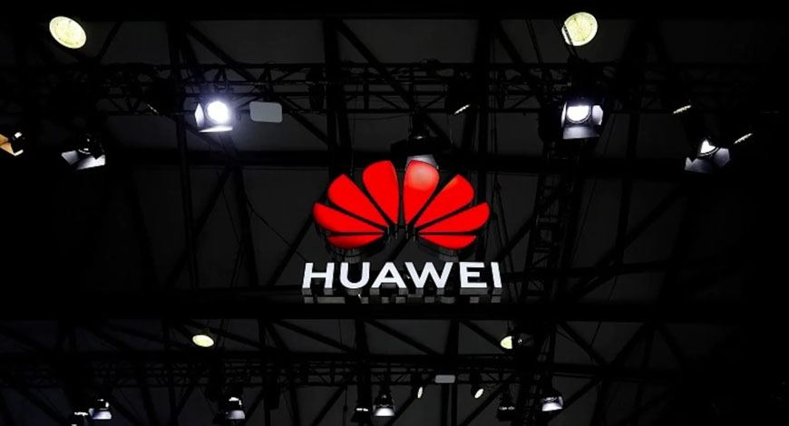
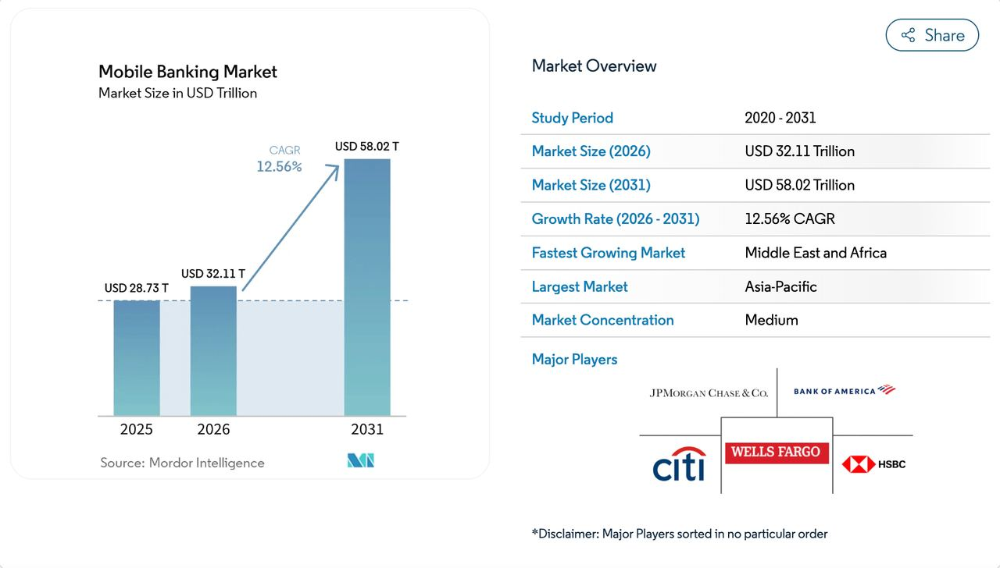
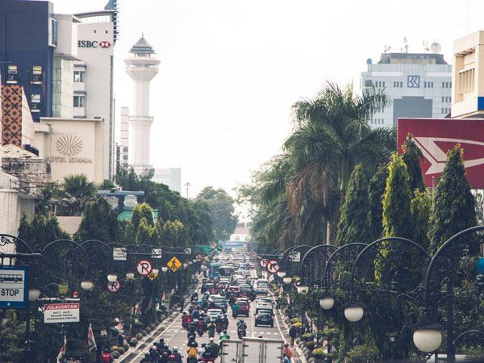
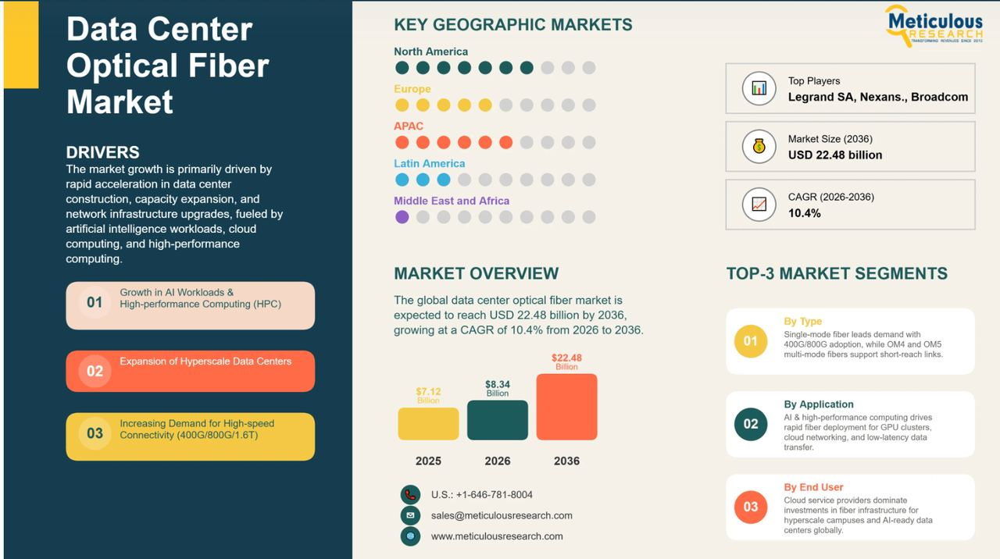
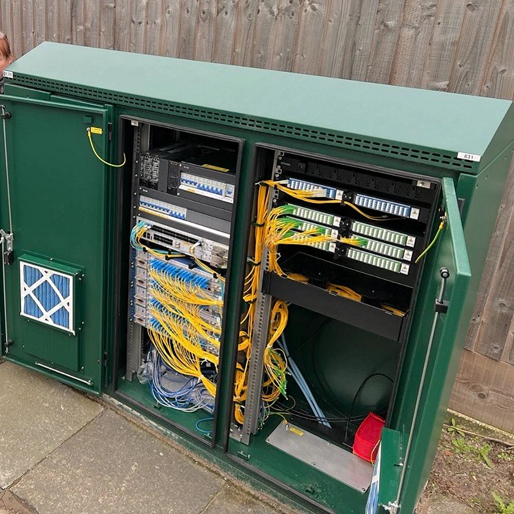
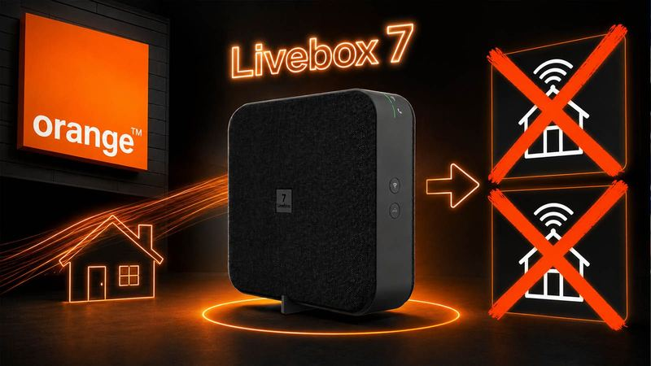
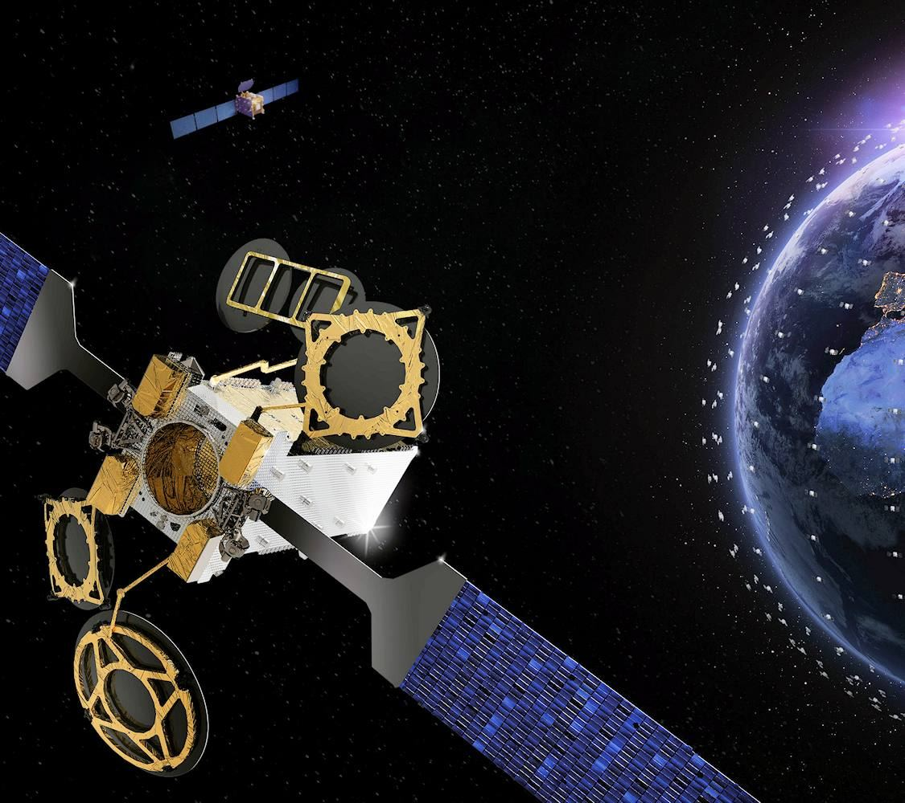
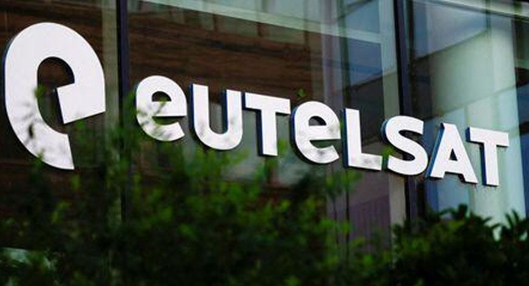

Ziggo startet ab 20. August auf Delta-Fiber-Netz
Ziggo startet ab 20. August auf Delta-Fiber-Netz
Ausgabe vom 7. August 2026
Alle Meldungen
60 Meldungen in 7 Ressorts. Jede Kachel zeigt die wichtigsten ihres Ressorts – „alle“ klappt das vollständige Ressort darunter auf.
Netz & Technik
15
Ziggo startet ab 20. August auf Delta-Fiber-Netz
 Openreach verzeichnet 37% mehr Vollglasfaser-Nutzung in UK
Openreach verzeichnet 37% mehr Vollglasfaser-Nutzung in UK

Huawei bringt KI-Agent für autonomes RAN-ManagementTarife & Angebote
11 Airtel Money startet Geschäftskunden-Wallet Bizna in Kenia
Airtel Money startet Geschäftskunden-Wallet Bizna in Kenia
 Digi verbessert Roaming-Preise und erweitert Länderliste
Digi verbessert Roaming-Preise und erweitert Länderliste
Satellit & Direct-to-Cell
11 Hispasat steigt in europäisches Starlink-Gegenprojekt ein
Hispasat steigt in europäisches Starlink-Gegenprojekt ein
 EU startet IRIS² mit 348 Satelliten für unabhängige Konnektivität
EU startet IRIS² mit 348 Satelliten für unabhängige Konnektivität
Regulierung & Politik
5 Italien legt 150-Millionen-Euro-Förderung für Cloud und Cybersecurity auf
Italien legt 150-Millionen-Euro-Förderung für Cloud und Cybersecurity auf
 Gericht kippt Mosambiks Internetsperr-Dekret
Gericht kippt Mosambiks Internetsperr-Dekret
Geld & Übernahmen
7
Mobile-Banking-Markt wächst auf 58 Billionen Dollar bis 2031 MTN Uganda wächst um 11,2 Prozent bei Mobilfunkkunden
MTN Uganda wächst um 11,2 Prozent bei Mobilfunkkunden
Partnerschaften
4 IOH baut mit 800 Mio. Dollar eine KI-Fabrik
IOH baut mit 800 Mio. Dollar eine KI-Fabrik

Indosat plant 1-GW-KI-Plattform mit Nokia und NvidiaVermischtes
7 Eskom: Trotz besserer Kraftwerke brechen Erzeugung und Kunden weg
Eskom: Trotz besserer Kraftwerke brechen Erzeugung und Kunden weg
Netz & Technik
15 Meldungen
öffnen

KI treibt Glasfaser-Geschäft in Rechenzentren auf 22,5 Mrd. Euro
Truespeed-Kunden buchen jetzt Freedom-Fibre-Glasfaser im Nordwesten Englands AT&T nutzt 600 MHz von EchoStar mit Ericsson
AT&T nutzt 600 MHz von EchoStar mit Ericsson
Tarife & Angebote
11 Meldungen
öffnen

Orange sperrt WLAN-7-Router für zwei Billigtarife Free Mobile verkauft Samsung Foldables mit Promo-Aktionen
Free Mobile verkauft Samsung Foldables mit Promo-Aktionen
Satellit & Direct-to-Cell
11 Meldungen
öffnen
 FCC prüft unlizenziertes Spektrum für Satelliten-Direktverbindung
FCC prüft unlizenziertes Spektrum für Satelliten-Direktverbindung

Eutelsat steigert OneWeb-Umsatz 69,5 Prozent auf 297 Mio. Euro
Eutelsat setzt auf OneWeb-Wachstum für Umsatzplus
Regulierung & Politik
5 Meldungen
öffnen
Geld & Übernahmen
7 Meldungen
öffnen
Partnerschaften
4 Meldungen
öffnen
Frühere Ausgaben
7. August 2026
151 neu
6. August 2026
642 neu
5. August 2026
426 neu
4. August 2026
124 neu
31. Juli 2026
220 neu
28. Juli 2026
9 neu
27. Juli 2026
49 neu
26. Juli 2026
4 neu
25. Juli 2026
11 neu
21. Juli 2026
185 neu
20. Juli 2026
27 neu
19. Juli 2026
233 neu
17. Juli 2026
257 neu
16. Juli 2026
1991 neu